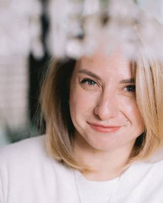
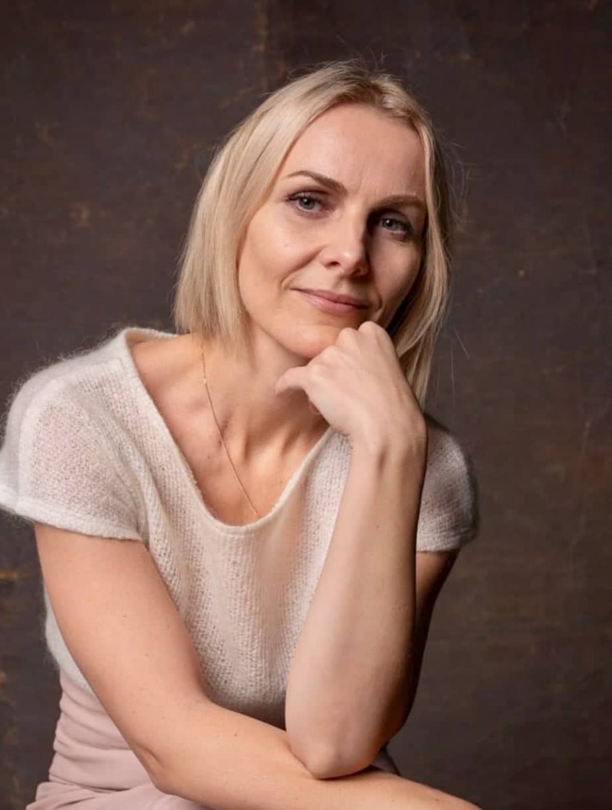
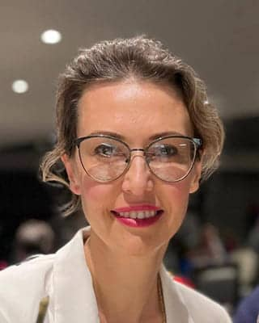
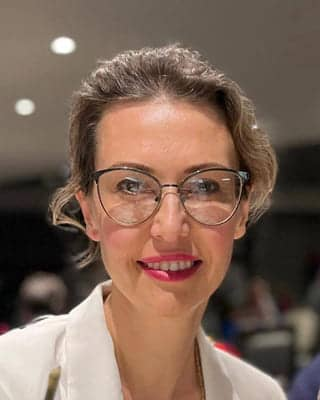
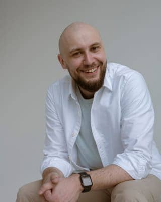
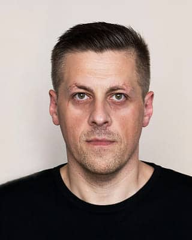
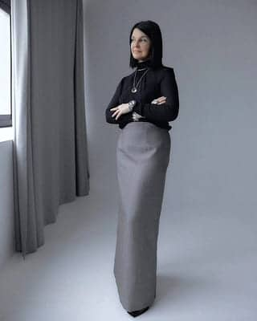
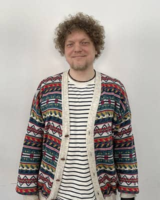

-
4 апреля
Регистрация, открытие конференции, лекции и мастер-классы, процесс-группы
-
5 апреля
Лекции и мастер-классы, семинары, практикумы, круглые-столы процесс-группы
-
6 апреля
Лекции и мастер-классы, семинары, практикумы, круглые-столы процесс-группы, закрытие конференции
-
Пятница 4 апреля / 14:00 - 20:006 часов
-
Директор и преподаватель Чилийского Гештальт Института, ведущая специализации «Основы работы с болезнями в гештальт-подходе», посвященной работе с заболеваниями и телесными симптомами, расшифровке языка тела и пониманию послания болезни.Открытая терапевтическая сессия с клиентом.Марина Варас проведет открытую терапевтическую сессию с клиентом с применением техники «диалога с органом», а также методологический разбор этой уникальной методики.Кандидат психологических наук, доцент, ведущий тренер Республиканского общественного объединения психологов и психотерапевтов «Гештальт Подход» (МГИ). Доцент кафедры психологии Брестского государственного университета имени А.С. Пушкина. Гештальт-терапевт (сертификаты МГИ, EAGT), преподаватель гештальт-терапии, супервизор. Специалист в области клинической психологии и психосоматики, системных семейных расстановок, групповой психотерапии. Действительный член Европейской Ассоциации Гештальт-терапии (EAGT), член правления Белорусской ассоциации психотерапевтов (БАП). Тренер Московского Гештальт Института. Член редколлегии журнала «Псiхалогiя». Автор более 300 научных и научно-методических публикаций в области современной практической психологии и психотерапии, в том числе трех монографий.Лекция "Терапия травмы дефицита"Терапия травмы дефицита. Травма дефицита: истоки проблемы. Дефицит и конфликт. Дефицитарный клиент: клиническая картина и феноменология. Пустое я. Дефицитарная самость. Терапия травмы дефицита и терапевтические отношения. Основные методы работы с клиентами с травмой дефицита.Врач психотерапевт, системный семейный терапевт, сертифицированный гештальт-терапевт (сертификат EAGT), супервизор, тренер ОППГП, магистр психологии (HSE), преподаватель НИУ ВШЭ, действительный член ППЛ и IARPP. Стаж работы в психиатрии более 15 летЛекция: "Этика как фактор терапевтических изменений"Поговорим о том, как этическое измерение формирует уникальность терапевтических отношений, проведем различия в представлених о терапии у начинающих и опытных терапевтом, рассмотрим механизмы, благодаря которым этика обеспечивает возможность для трансформации в ходе терапииПрактикующий психолог. Гештальт - терапевт европейского реестра (член EAGT). Аккредитованный супервизор ОПП ГП . Сексолог. Специалист в области работы с кризисами и травмами и эмоциональной зависимости. Создатель и ведущая терапевтического курса по сепарации «Право быть собой». Создатель и вдохновитель психологического арт - пространства «Жизнь».Круглый стол: «Слушай, понимай, действуй: искусство диалога между поколениями»Вас ждёт глубокое погружение в тему межпоколенческого диалога и работы с сопротивлением. Узнайте, как поколения формируют свои стратегии избегания контакта и чем они отличаются, а также получите практические рекомендации для работы с каждым из них - от «молчаливого поколения» до «поколения альфа».Ведущий тренер МГИ, гештальт-терапевт, супервизор, кандидат психол. наук, телесный терапевт.Лекция «О шок-травме и телесности».Доклад посвящен шоковой или острой травме. Как она влияет на мозг, телесность и идентичность человека. Как мы можем «реанимировать» телесность и помочь человеку пережить травмирующее событие.
 Магистр психологии, аккредитованный гештальт-терапевт, руководитель Центра профессиональной подготовки и продвижения психологов "Терапия в лицах".Лекция: «"Кризисы в становлении и развитии идентичности терапевта"»Приглашаем на динамичную лекцию и в коллегиальное пространство для общения. Что вас ждёт? Поговорим про кризисы в начале становления гештальт-терапевта; Обсудим сложности, с которыми сталкивается большинство из нас при формировании практики; Поделимся опытом в "выгорании" в профессии (как подготовиться и что делать); Рассмотрим кризисы в становлении и развитии идентичности терапевта, опираясь на разные источники и сверим со своим путем. Идентичность психолога — процесс, который требует постоянного внимания к своему внутреннему состоянию и профессиональной роли. Понимание возможных кризисов и подготовка к ним — важные шаги на пути к эффективному и гармоничному развитию в профессии.
Магистр психологии, аккредитованный гештальт-терапевт, руководитель Центра профессиональной подготовки и продвижения психологов "Терапия в лицах".Лекция: «"Кризисы в становлении и развитии идентичности терапевта"»Приглашаем на динамичную лекцию и в коллегиальное пространство для общения. Что вас ждёт? Поговорим про кризисы в начале становления гештальт-терапевта; Обсудим сложности, с которыми сталкивается большинство из нас при формировании практики; Поделимся опытом в "выгорании" в профессии (как подготовиться и что делать); Рассмотрим кризисы в становлении и развитии идентичности терапевта, опираясь на разные источники и сверим со своим путем. Идентичность психолога — процесс, который требует постоянного внимания к своему внутреннему состоянию и профессиональной роли. Понимание возможных кризисов и подготовка к ним — важные шаги на пути к эффективному и гармоничному развитию в профессии. Аккредитованный гештальт терапевт и супервизор РОО ОПП ГП, гештальт-терапевт Европейского реестра (член EAGT)Мастерская: «Сексуальная травма: от боли - к восстановлению»Мастер-класс посвящен работе с сексуальной травмой — одной из самых сложных и деликатных тем в психологии. Участники узнают о сексуальной травма, научатся создавать безопасное пространство для клиентов и минимизировать риски ретравматизации. Практическая часть включает разбор примеров работ, упражнения для работы с триггерами и обсуждение дилемм. Акцент будет на резильентности, восстановлении и поддержке как клиентов, так и специалистов». Кому подойдет мастер-класс: - Психологам, психотерапевтам, студентам профильных направлений. - Социальным работникам, кризисным консультантам, врачам. - Всем, кто работает с жертвами насилия или хочет глубже понять тему травмы. Дисклеймер (перед началом): Мастер-класс затрагивает темы сексуального насилия и психологической травмы, что может вызвать сильные эмоции. Если вы чувствуете, что тема может быть травматичной для вас, позаботьтесь о себе: вы можете покинуть зал в любой момент. Ведущий соблюдает принцип конфиденциальности: все примеры из практики анонимизированы. Участие не заменяет профессионального обучения — это вводный обзор методов работы.Инга Гара: Психолог, гештальт-консультант, куратор и супервизор образовательных проектов для психологов.Каныкей Дюшева: Психолог, семейный консультант, студент 2 ступени МГИ, коуч ICTA.Мастер-класс: «Преодоление профессиональных барьеров: как травматичный опыт влияет на формирование практики психолога»vvНа пути к профессиональной реализации психологи часто сталкиваются с препятствиями: кто-то ищет одобрения старших коллег или принятия окружением, кому-то страшно говорить на профессиональные темы (уже все сказано до меня), сложности устанавливать и называть цену на услуги, брать деньги за помощь людям, быть заметным в сообществе и успешным в своей реализации. Все эти сложности имеют единые корни - наш ранний травматичный опыт. На мастер-классе мы: Поговорим о том как наши травмы разных периодов развития в детстве продолжают влиять на наш профессиональный рост и развитие во взрослом возрасте. Рассмотрим свой профессиональный путь через призму цикла контакта в гештальте и найдем то, что мешает нам быть свободным, спонтанным, живым и вместе с тем профессиональным психологом. Исследуем, как травматичный опыт — который на первый взгляд кажется препятствием — может стать источником глубокой эмпатии и способствовать формированию устойчивой профессиональной идентичности. Вас ждет интересное обсуждение в кругу коллег, лекция, раздаточный материал и эксперимент, который позволит больше понимать свои сильные стороны и увидеть в своих травмах скрытые ресурсы для развития в профессии
Аккредитованный гештальт терапевт и супервизор РОО ОПП ГП, гештальт-терапевт Европейского реестра (член EAGT)Мастерская: «Сексуальная травма: от боли - к восстановлению»Мастер-класс посвящен работе с сексуальной травмой — одной из самых сложных и деликатных тем в психологии. Участники узнают о сексуальной травма, научатся создавать безопасное пространство для клиентов и минимизировать риски ретравматизации. Практическая часть включает разбор примеров работ, упражнения для работы с триггерами и обсуждение дилемм. Акцент будет на резильентности, восстановлении и поддержке как клиентов, так и специалистов». Кому подойдет мастер-класс: - Психологам, психотерапевтам, студентам профильных направлений. - Социальным работникам, кризисным консультантам, врачам. - Всем, кто работает с жертвами насилия или хочет глубже понять тему травмы. Дисклеймер (перед началом): Мастер-класс затрагивает темы сексуального насилия и психологической травмы, что может вызвать сильные эмоции. Если вы чувствуете, что тема может быть травматичной для вас, позаботьтесь о себе: вы можете покинуть зал в любой момент. Ведущий соблюдает принцип конфиденциальности: все примеры из практики анонимизированы. Участие не заменяет профессионального обучения — это вводный обзор методов работы.Инга Гара: Психолог, гештальт-консультант, куратор и супервизор образовательных проектов для психологов.Каныкей Дюшева: Психолог, семейный консультант, студент 2 ступени МГИ, коуч ICTA.Мастер-класс: «Преодоление профессиональных барьеров: как травматичный опыт влияет на формирование практики психолога»vvНа пути к профессиональной реализации психологи часто сталкиваются с препятствиями: кто-то ищет одобрения старших коллег или принятия окружением, кому-то страшно говорить на профессиональные темы (уже все сказано до меня), сложности устанавливать и называть цену на услуги, брать деньги за помощь людям, быть заметным в сообществе и успешным в своей реализации. Все эти сложности имеют единые корни - наш ранний травматичный опыт. На мастер-классе мы: Поговорим о том как наши травмы разных периодов развития в детстве продолжают влиять на наш профессиональный рост и развитие во взрослом возрасте. Рассмотрим свой профессиональный путь через призму цикла контакта в гештальте и найдем то, что мешает нам быть свободным, спонтанным, живым и вместе с тем профессиональным психологом. Исследуем, как травматичный опыт — который на первый взгляд кажется препятствием — может стать источником глубокой эмпатии и способствовать формированию устойчивой профессиональной идентичности. Вас ждет интересное обсуждение в кругу коллег, лекция, раздаточный материал и эксперимент, который позволит больше понимать свои сильные стороны и увидеть в своих травмах скрытые ресурсы для развития в профессии Ассоциированный тренер, супервизор, гештальт-терапевт. Специалист по работе с кризисами и травмой.Лекция «Травма привязанности: фокус в терапии и стратегии работы»Поговорим о том, как формируется привязанность в раннем детстве. О том, какие бывают травмы привязанности и как их распознать, а также о стратегиях работы терапевта.Пылёв Максим Сергеевич Гештальт-терапевт, супервизор, тренер МГИ. Магистр психологии, программный руководитель РЦ «Феникс». Председатель РОО ОППГП.Абдурагимова Мария магистр психологических наук, Гештальт-терапевт, супервизор, тренер.Лекция: "Зависимость - семейная болезнь."На данной лекции постараемся разобраться с зависимостью, как с симптомом семейной системы. Как семья инвестирует в болезнь и как становится заложником своих же попыток спасти зависимого и причинить ему добро. Поговорим о травмах полученных в семьях зависимых. Простым языком о сложных вещах.
Ассоциированный тренер, супервизор, гештальт-терапевт. Специалист по работе с кризисами и травмой.Лекция «Травма привязанности: фокус в терапии и стратегии работы»Поговорим о том, как формируется привязанность в раннем детстве. О том, какие бывают травмы привязанности и как их распознать, а также о стратегиях работы терапевта.Пылёв Максим Сергеевич Гештальт-терапевт, супервизор, тренер МГИ. Магистр психологии, программный руководитель РЦ «Феникс». Председатель РОО ОППГП.Абдурагимова Мария магистр психологических наук, Гештальт-терапевт, супервизор, тренер.Лекция: "Зависимость - семейная болезнь."На данной лекции постараемся разобраться с зависимостью, как с симптомом семейной системы. Как семья инвестирует в болезнь и как становится заложником своих же попыток спасти зависимого и причинить ему добро. Поговорим о травмах полученных в семьях зависимых. Простым языком о сложных вещах.- 
Аккредитованный гештальт-терапевт, тренер-стажер, групповой и телесный терапевтЛекция «Исцеление травмы терапевтическими отношениями»по мотивам работ Жан-Мари Робина- 
Доктор психологии (PhD), руководитель Балтийского Института Психотерапии, семейный психолог, гештальт-терапевт, супервизор добавь психотерапевт европейского реестра (EAP и EAGT.)Лекция: "Факторы травматизации в супружеских отношениях"Лекция с элементами группой дискуссии будет посвящена обсуждению вопросов, которые мы рассматриваем как вызовы для современной семьи. Мы проанализируем, что именно в современном браке пожет приводить к ощущению ранености, разбитости, зазрушенности, и почему в современном мире отношения имеют над нами столько власти Гештальт-терапевт, супервизор, тренер МГИ. Ведущая обучающих, супервизорских, терапевтических групп и специализаций. Член Общества Практикующих Психологов «Гештальт Подход» (ОПП ГП). Специализации: работа с сексуальными и семейными проблемами, кризисы и травмы, психотерапия зависимого поведения.Мастерская «Отыгрывание травмы в терапевтическом пространстве».Бытует мнение, что с травмой работать легко, главное правильно подобрать нужную технику. На мой взгляд, это большое заблуждение. Существует множество рабочих техник, которые помогают стабилизировать эмоциональное состояние, обнаружить травматическое событие и переработать его, но, в практике мы часто сталкиваемся с тем, что этого оказывается недостаточно. Травма формируется в отношениях и, соответственно, травма исцеляется в отношениях, а это долгоиграющий процесс. Часто клиент не может вспомнить конкретный травматический эпизод, а возможно и большой кусок своей жизни, у него нет доступа к этим воспоминаниям. Симптомы травмы есть, а связать их с жизнью клиента не представляется возможным. Нет слов, нет воспоминаний и даже чувств, только симптомы, которые вносят в жизнь человека серьёзные ограничения и мешают жить полной жизнью. В этом случае клиент не сможет рассказать нам словами, что с ним произошло. Он будет говорить с нами на другом языке, он покажет нам, что с ним произошло в нашем с ним взаимодействии. Он пригласит нас на роль определённого персонажа в этой истории, разыграет её в психотерапевтическом пространстве, в надежде, что мы поможем это обнаружить и переработать. Клиент приходит к нам на сессию и образно говоря, «накрывает на стол», предлагает нам определённые блюда и просит разделить с ним трапезу. «Стол» очень разнообразный и богатый, но так хочется заглянуть на «кухню» и увидеть процесс приготовления. Это очень увлекательный процесс. Приглашаю вас «на кухню», будем с вами готовить «авторские блюда» и наслаждаться «приёмом пищи».Суббота 5 апреля / 10:00 - 18:308 часов 30 минут
Гештальт-терапевт, супервизор, тренер МГИ. Ведущая обучающих, супервизорских, терапевтических групп и специализаций. Член Общества Практикующих Психологов «Гештальт Подход» (ОПП ГП). Специализации: работа с сексуальными и семейными проблемами, кризисы и травмы, психотерапия зависимого поведения.Мастерская «Отыгрывание травмы в терапевтическом пространстве».Бытует мнение, что с травмой работать легко, главное правильно подобрать нужную технику. На мой взгляд, это большое заблуждение. Существует множество рабочих техник, которые помогают стабилизировать эмоциональное состояние, обнаружить травматическое событие и переработать его, но, в практике мы часто сталкиваемся с тем, что этого оказывается недостаточно. Травма формируется в отношениях и, соответственно, травма исцеляется в отношениях, а это долгоиграющий процесс. Часто клиент не может вспомнить конкретный травматический эпизод, а возможно и большой кусок своей жизни, у него нет доступа к этим воспоминаниям. Симптомы травмы есть, а связать их с жизнью клиента не представляется возможным. Нет слов, нет воспоминаний и даже чувств, только симптомы, которые вносят в жизнь человека серьёзные ограничения и мешают жить полной жизнью. В этом случае клиент не сможет рассказать нам словами, что с ним произошло. Он будет говорить с нами на другом языке, он покажет нам, что с ним произошло в нашем с ним взаимодействии. Он пригласит нас на роль определённого персонажа в этой истории, разыграет её в психотерапевтическом пространстве, в надежде, что мы поможем это обнаружить и переработать. Клиент приходит к нам на сессию и образно говоря, «накрывает на стол», предлагает нам определённые блюда и просит разделить с ним трапезу. «Стол» очень разнообразный и богатый, но так хочется заглянуть на «кухню» и увидеть процесс приготовления. Это очень увлекательный процесс. Приглашаю вас «на кухню», будем с вами готовить «авторские блюда» и наслаждаться «приёмом пищи».Суббота 5 апреля / 10:00 - 18:308 часов 30 минут Кандидат психологических наук, психотерапевт европейского реестра (EAP и EAGT), член ректората СПб Института Гештальта, супервизор.Лекция: «Смерть. Направления работы и как в процессе не умереть самому от горя"»Смерть – это бетонный каток. Телефонный звонок илисообщение, которые делят жизнь на «до» и «после». Я расскажу о том, почему опора на стадии утраты по Э. Кюблер– Росс не работает и за что клиенты ненавидят психологов в работе с темой смерти. Как отвечать на самый искренний вопрос: «Чем вы можете мне помочь, Вы же невернете его». Поговорим о современном подходе в терапии утраты. Дам конкретные инструменты работы. Поверьте, после этого семинара, Вы будете меньше бояться этойтемы. Именно смерть многому научила меня. Не киснуть из-за пустяков. Вставать раньше. Не потому что "магия утра", а потому жалкодержать глаза закрытыми. Говорить: "Я люблю тебя" и обнимать людей. Любить дождь и даже ноябрь. Потому что это может быть твой последний ноябрь. Беречьвремя. Тратить деньги. Зарабатывать деньги. Ставить цветы в вазы. Пить кофе. Разговаривать со всеми подряд. Не обижать. Любить.
Кандидат психологических наук, психотерапевт европейского реестра (EAP и EAGT), член ректората СПб Института Гештальта, супервизор.Лекция: «Смерть. Направления работы и как в процессе не умереть самому от горя"»Смерть – это бетонный каток. Телефонный звонок илисообщение, которые делят жизнь на «до» и «после». Я расскажу о том, почему опора на стадии утраты по Э. Кюблер– Росс не работает и за что клиенты ненавидят психологов в работе с темой смерти. Как отвечать на самый искренний вопрос: «Чем вы можете мне помочь, Вы же невернете его». Поговорим о современном подходе в терапии утраты. Дам конкретные инструменты работы. Поверьте, после этого семинара, Вы будете меньше бояться этойтемы. Именно смерть многому научила меня. Не киснуть из-за пустяков. Вставать раньше. Не потому что "магия утра", а потому жалкодержать глаза закрытыми. Говорить: "Я люблю тебя" и обнимать людей. Любить дождь и даже ноябрь. Потому что это может быть твой последний ноябрь. Беречьвремя. Тратить деньги. Зарабатывать деньги. Ставить цветы в вазы. Пить кофе. Разговаривать со всеми подряд. Не обижать. Любить. Кандидат психологических наук, член EAGT. Гештальттерапевт, супервизор, ведущий тренер. Ведущая специализации «Кризисы и травмы в работе гештальттерапевта».Лекция: «Голос тишины: психологическая помощь свидетелям травматических событий».Травматические события могут оставить глубокий след не только в душе пострадавших, но и отпечататься в памяти и переживаниях свидетелей. Чаще всего они оказываются в тени, не получая должного внимания и поддержки. Проблемы, с которыми сталкиваются свидетели, могут проявляться в виде посттравматического стрессового расстройства (ПТСР), тревожности, депрессии и чувства вины. Несмотря на то, что свидетели могли непосредственно не пострадать, их переживания заслуживают внимания, и им необходима психологическая помощь. Свидетели травматических событий могут испытывать множество эмоций: от шока и страха до чувства беспомощности и нереальности случившегося. Они могут оказаться в ситуации, когда не знают, как справиться с увиденным и услышанным. Отсутствие поддержки и понимания может усугубить их состояние, сделать его хроническим. На лекции мы будем говорить о том, как позволить «голосу тишины» быть услышанным, и дать людям возможность восстановить свою жизнь через проживание того, чему они были свидетелями.
Кандидат психологических наук, член EAGT. Гештальттерапевт, супервизор, ведущий тренер. Ведущая специализации «Кризисы и травмы в работе гештальттерапевта».Лекция: «Голос тишины: психологическая помощь свидетелям травматических событий».Травматические события могут оставить глубокий след не только в душе пострадавших, но и отпечататься в памяти и переживаниях свидетелей. Чаще всего они оказываются в тени, не получая должного внимания и поддержки. Проблемы, с которыми сталкиваются свидетели, могут проявляться в виде посттравматического стрессового расстройства (ПТСР), тревожности, депрессии и чувства вины. Несмотря на то, что свидетели могли непосредственно не пострадать, их переживания заслуживают внимания, и им необходима психологическая помощь. Свидетели травматических событий могут испытывать множество эмоций: от шока и страха до чувства беспомощности и нереальности случившегося. Они могут оказаться в ситуации, когда не знают, как справиться с увиденным и услышанным. Отсутствие поддержки и понимания может усугубить их состояние, сделать его хроническим. На лекции мы будем говорить о том, как позволить «голосу тишины» быть услышанным, и дать людям возможность восстановить свою жизнь через проживание того, чему они были свидетелями. ЭФТ-терапевт (Стандарт ICEEFT, Канада); НМТ-ТЕРАПЕВТ: соавтор и соведущая тренинга «HMT-Moscow: Обними меня крепче»; системный семейный психолог, нарративный консультант, преподаватель Центра Системной Семейной Психологии Инны Хамитовой. Членство в профессиональных сообществах: Член ICEEFT (The International Centre of Excellence in Emotionally Focused Therapy - http://www.iceeft.com ); Опыт преподавания (ЦССТ): Преподаватель программы повышения квалификации 1200 академических часов «ЭФТ»; Авторские тренинги: Работа с агрессивным и уничтожающим поведением в парах; Работа с метафорами в ЭФТ; Работа с изменами в ЭФТ; Тренинг по работе с уязвимостью, обидами и ранами привязанности.Мастер-класс: "ЭФТ: как чинить разрывы в отношениях между взрослыми детьми и стареющими родителями"Психолог, экзистенциальный терапевт-практикант в Новой школе психотерапии и консультирования (NSPC) и Миддлсекском университете в Лондоне. Основатель и соредактор журнала "Интегративная психотерапия и системный анализ". Ассоциированный член Федерации экзистенциальной терапии Европы (FETE) и Общества экзистенциального анализа (SEA) в Лондоне.Лекция/практикум: "От разрушения к целостности: Экзистенциальный феноменологический подход к травме"Травма – это не просто боль или воспоминание, это разрушение связей с миром, с другими и с самим собой. Она размывает границы времени: прошлое становится удушающим настоящим, а будущее теряет свою реальность. В этом семинаре мы рассмотрим, как травма изменяет саму структуру существования, и почему традиционные попытки «исправить» последствия зачастую не работают. Экзистенциально-феноменологический подход позволяет увидеть травму как нарушение целостности переживания времени, пространства, тела и смысла. Мы разберем, как травма фрагментирует восприятие, почему попытки «вернуть все, как было» обречены, и каким образом можно построить новую основу для жизни. Исследуем роль аутентичного контакта, присутствия и понимания в процессе восстановления, а также рассмотрим границы и возможности экзистенциального метода в работе с травмой. - Распад структуры времени – почему травма запирает человека в прошлом и лишает человека ощущения будущего. - Тревога и рост – как экзистенциальная тревога становится не тупиком, а точкой движения вперед. - Терапевт как свидетель – присутствие вместо директивных инструкций. - Границы и возможности интеграции – как экзистенциальная терапия сочетается с соматическими и когнитивными методами. Лекция не о возвращении к прежнему, а о том, как научиться преодолевать разрушенное и находить основу для жизни, которая еще возможна. Max KarlinМира Конина Аккредитованный гештальт-терапевт и супервизор, ведущая групп, член Испанской Ассоциации Гештальт-Терапии (AETG), ведущая авторского курса по этике.Анастасия Титаренко Аккредитованный гештальт-терапевт, супервизор, ведущая групп, член Испанской Ассоциации Гештальт-Терапии (AETG), ведущая авторского курса по этике.Круглый стол “Когда терапия причиняет вред”Этика в психологии — это не просто свод правил, регулирующих работу специалистов. Она выполняет важную защитную функцию, оберегая клиентов от повторной травматизации. Однако в практике психологов и психотерапевтов неизбежно возникают сложные, порой противоречивые ситуации, в которых специалист может ненамеренно причинить вред. Обсуждать такие ситуации бывает непросто — иногда для этого не находится подходящего места, или мешает страх осуждения и стыд. Мы приглашаем вас на круглый стол, где разберем клинические случаи, связанные с нарушением этических границ, ретравматизацией клиентов и их последствиями. Эта встреча — возможность в безопасном и поддерживающем пространстве поделиться собственным опытом, поддержать друг друга и укрепить внутренние этические ориентиры. Будем рады вашему участию!
ЭФТ-терапевт (Стандарт ICEEFT, Канада); НМТ-ТЕРАПЕВТ: соавтор и соведущая тренинга «HMT-Moscow: Обними меня крепче»; системный семейный психолог, нарративный консультант, преподаватель Центра Системной Семейной Психологии Инны Хамитовой. Членство в профессиональных сообществах: Член ICEEFT (The International Centre of Excellence in Emotionally Focused Therapy - http://www.iceeft.com ); Опыт преподавания (ЦССТ): Преподаватель программы повышения квалификации 1200 академических часов «ЭФТ»; Авторские тренинги: Работа с агрессивным и уничтожающим поведением в парах; Работа с метафорами в ЭФТ; Работа с изменами в ЭФТ; Тренинг по работе с уязвимостью, обидами и ранами привязанности.Мастер-класс: "ЭФТ: как чинить разрывы в отношениях между взрослыми детьми и стареющими родителями"Психолог, экзистенциальный терапевт-практикант в Новой школе психотерапии и консультирования (NSPC) и Миддлсекском университете в Лондоне. Основатель и соредактор журнала "Интегративная психотерапия и системный анализ". Ассоциированный член Федерации экзистенциальной терапии Европы (FETE) и Общества экзистенциального анализа (SEA) в Лондоне.Лекция/практикум: "От разрушения к целостности: Экзистенциальный феноменологический подход к травме"Травма – это не просто боль или воспоминание, это разрушение связей с миром, с другими и с самим собой. Она размывает границы времени: прошлое становится удушающим настоящим, а будущее теряет свою реальность. В этом семинаре мы рассмотрим, как травма изменяет саму структуру существования, и почему традиционные попытки «исправить» последствия зачастую не работают. Экзистенциально-феноменологический подход позволяет увидеть травму как нарушение целостности переживания времени, пространства, тела и смысла. Мы разберем, как травма фрагментирует восприятие, почему попытки «вернуть все, как было» обречены, и каким образом можно построить новую основу для жизни. Исследуем роль аутентичного контакта, присутствия и понимания в процессе восстановления, а также рассмотрим границы и возможности экзистенциального метода в работе с травмой. - Распад структуры времени – почему травма запирает человека в прошлом и лишает человека ощущения будущего. - Тревога и рост – как экзистенциальная тревога становится не тупиком, а точкой движения вперед. - Терапевт как свидетель – присутствие вместо директивных инструкций. - Границы и возможности интеграции – как экзистенциальная терапия сочетается с соматическими и когнитивными методами. Лекция не о возвращении к прежнему, а о том, как научиться преодолевать разрушенное и находить основу для жизни, которая еще возможна. Max KarlinМира Конина Аккредитованный гештальт-терапевт и супервизор, ведущая групп, член Испанской Ассоциации Гештальт-Терапии (AETG), ведущая авторского курса по этике.Анастасия Титаренко Аккредитованный гештальт-терапевт, супервизор, ведущая групп, член Испанской Ассоциации Гештальт-Терапии (AETG), ведущая авторского курса по этике.Круглый стол “Когда терапия причиняет вред”Этика в психологии — это не просто свод правил, регулирующих работу специалистов. Она выполняет важную защитную функцию, оберегая клиентов от повторной травматизации. Однако в практике психологов и психотерапевтов неизбежно возникают сложные, порой противоречивые ситуации, в которых специалист может ненамеренно причинить вред. Обсуждать такие ситуации бывает непросто — иногда для этого не находится подходящего места, или мешает страх осуждения и стыд. Мы приглашаем вас на круглый стол, где разберем клинические случаи, связанные с нарушением этических границ, ретравматизацией клиентов и их последствиями. Эта встреча — возможность в безопасном и поддерживающем пространстве поделиться собственным опытом, поддержать друг друга и укрепить внутренние этические ориентиры. Будем рады вашему участию! Основатель и ректор Университета Современной Психологии Натальи Жуковой Аккредитованный и сертифицированный в России и Европе гештальт-терапевт. Сертификат EAGT (Франция). Самый цитируемый специалист по созависимости в России. Магистр психологических наук МГУ им. Ломоносова. Обучалась в Сколково на программах SKOLKOVO Executive MBA и Executive Coaching & Mentoring SKOLKOVO Опыт работы психологом 15 лет. Регулярные супервизии и личная терапия более 14 лет.Интерактивная лекция «Кризис идентичности начинающего психолога: между грандиозностью и ничтожностью»Психология в последнее время стала массовой профессией. Психологов готовят профильные и непрофильные вузы, частные центры. Все рассказывают будущим психологам, что они будут помогать людям. Но никто не рассказывает, какой долгий путь предстоит пройти специалисту, сколько семинаров посетить, какое количество тяжелых историй выслушать, чтобы сказать с гордостью: «Я – психолог». Пребывание начинающего специалиста между грандиозностью (я все могу, я хочу много денег, я гениален) и ничтожностью (где брать клиентов, как работать со сложными случаями, что делать, если клиент говорит мне о том, что я – шарлатан) – это нормальная стадия развития. Мы попробуем обсудить, как можно сделать эти «колебания» между этими нарциссическими полюсами и стать достаточно хорошим профессионалом.
Основатель и ректор Университета Современной Психологии Натальи Жуковой Аккредитованный и сертифицированный в России и Европе гештальт-терапевт. Сертификат EAGT (Франция). Самый цитируемый специалист по созависимости в России. Магистр психологических наук МГУ им. Ломоносова. Обучалась в Сколково на программах SKOLKOVO Executive MBA и Executive Coaching & Mentoring SKOLKOVO Опыт работы психологом 15 лет. Регулярные супервизии и личная терапия более 14 лет.Интерактивная лекция «Кризис идентичности начинающего психолога: между грандиозностью и ничтожностью»Психология в последнее время стала массовой профессией. Психологов готовят профильные и непрофильные вузы, частные центры. Все рассказывают будущим психологам, что они будут помогать людям. Но никто не рассказывает, какой долгий путь предстоит пройти специалисту, сколько семинаров посетить, какое количество тяжелых историй выслушать, чтобы сказать с гордостью: «Я – психолог». Пребывание начинающего специалиста между грандиозностью (я все могу, я хочу много денег, я гениален) и ничтожностью (где брать клиентов, как работать со сложными случаями, что делать, если клиент говорит мне о том, что я – шарлатан) – это нормальная стадия развития. Мы попробуем обсудить, как можно сделать эти «колебания» между этими нарциссическими полюсами и стать достаточно хорошим профессионалом. Кандидат психологических наук, доцент, психолог, гештальт-терапевт, супервизор, ассоциированный тренер МГИЛекция «Переживание неполноценности: истоки, функции, терапия».Переживание неполноценности - наиболее частый, пожалуй, побудитель многих деструктивных и аутодеструктивных состояний и болезненных чувств: враждебности, депрессии, стыда, вины, тревоги, зависти, обиды, ревности и др. Практикующие психологи на каждом шагу имеют дело с неполноценностью. Неполноценность также можно рассматривать как предиктор травматизации личности и, с другой стороны, как следствие травмы, особенно травмы привязанности. В лекции будет раскрыта сущность неполноценности, её истоки и способы терапии в разных подходах, а в контексте гештальт-терапии - более подробно.
Кандидат психологических наук, доцент, психолог, гештальт-терапевт, супервизор, ассоциированный тренер МГИЛекция «Переживание неполноценности: истоки, функции, терапия».Переживание неполноценности - наиболее частый, пожалуй, побудитель многих деструктивных и аутодеструктивных состояний и болезненных чувств: враждебности, депрессии, стыда, вины, тревоги, зависти, обиды, ревности и др. Практикующие психологи на каждом шагу имеют дело с неполноценностью. Неполноценность также можно рассматривать как предиктор травматизации личности и, с другой стороны, как следствие травмы, особенно травмы привязанности. В лекции будет раскрыта сущность неполноценности, её истоки и способы терапии в разных подходах, а в контексте гештальт-терапии - более подробно.- 
Гештальт- терапевт, супервизор, Ассоциированный тренер МГИЛекция: Творческое мужество: Как арт-терапия помогает исцелять травмы"Этот метод может значительно облегчить переживания и помочь в процессе исцеления." — Грегг Ферс. Приглашаю вас на лекцию, посвященную креативной терапии в работе с травмой. Мы обсудим историю формирования арт-терапии как эффективного способа работы с болью и травмой. В рамках лекции вы узнаете: • Как арт-терапия помогает не только сублимировать эмоции, но и создавать новое. • Практические методы и техники для работы с клиентами в сложных переживаниях. Присоединяйтесь, чтобы расширить свои знания и инструменты в области психологической помощи!Психолог, ведущий тренер программы МГИМастер-класс: «Кризис идентичности как неизбежный этап любого психологического кризиса»-Что такое кризис идентичности, как он протекает динамически. -Как на динамику кризиса идентичности влияют не только индивидуальные жизненные кризисы, но и глобальные экстремальные ситуации и социальная нестабильность. -Какие основные признаки кризиса идентичности вы можете заметить у себя и своих клиентов. -Как гештальт-терапевту работать с клиентом, находящимся в кризисе идентичности -Основные сложности (какие новые идентичности нам не нравятся и как с этим быть) -Упражнение, которое будет полезным как для саморефлексии, так и для работы с клиентамиАссоциированный тренер, системный семейный терапевт, сексолог, арт-терапевт.Мастер-класс "Щит Персея" (Арт-терапия в работе с ПТСР)Работа с травмой и её последствиями - тема, с которой, к сожалению, так или иначе, соприкасается каждый из нас. Арт-терапия - это направление, которое позволяет быть в этой теме особенно бережным. Если бы человек мог сам напрямую" взглянуть в лицо травме" и не погибнуть, он бы это сделал. Но, как и в битве Персея с Медузой Горгоной, ему для начала нужно" активизировать защитный щит" - ресурсы. В рамках мастерской будем учиться его создавать. Рассмотрим этапы работы с травмой и некоторые техники арт-терапии, которые можно использовать на каждом из них. Необходимые материалы: бумага, карандаши (краски), любой повреждённый предмет.Психолог, работающий в гештальт-подходе,а также с темой сексуальности и сновидений.Мастер-класс: "Тени исчезают в полночь"»Совокупность происходящих в мире событий, собственные трясины души человека. Кризисы и травмы. Все это требует от человека других способов адаптации к новой реальности. А может настало время посмотреть на своих ухмыляющихся теневых «демонов»? Возможно наши внутренние, отвергаемые Тени воплощают все, чего мы боимся, и все, что может проглотить нас, но также могут оказаться чрезвычайно полезными и ресурсными. Готовность высвободить наши темные порывы может обеспечить свежей энергией. Человек без Тени слишком пресный и неинтересный. Но где же тогда «выгулять все свои субличности» без потери репутации и с пользой для себя? Расскажу и покажу это на моем мастер-классе, где с помощью МАК-карт поисследуем, а возможно, и откроем ваши новые теневые стороны. А после обязательно присвоим им место внутри нас. И имя.Виолетта Сижук: Магистр психологических наук, сертифицированный гештальт-терапевт, травматерапевт, нейропсихолог, специалист по работе со сновидениями, ведущая групп.Ксения Кострома: Семейный психолог, сертифицированный гештальт-терапевт, специалист по кризисам, травмам и сексологии.Мастер-класс «Тени прошлого: как травматический опыт влияет на самоотношение»Дорогие друзья! В жизни каждого из нас бывают моменты, которые оставляют глубокий след. Травмы, будь то физические или эмоциональные, могут формировать наши убеждения о себе, влиять на способ восприятия и построения отношений с окружающими. Чрезмерная самокритика, тревожность, аутоагрессия — это лишь некоторые из последствий, с которыми сталкиваются люди, не осознающие связь между их прошлым и настоящим. На нашем мастер-классе вы сможете: - Понять, как тени прошлых травм влияют на ваше самоощущение и поведение. - Исследовать теневые и ресурсные стороны вашей травмы с помощью проективной техники. - Обменяться опытом и получить поддержку в безопасной и доверительной атмосфере.Марьяна Синичкина-Петрова: аккредитованный гештальт-терапевт (МГИ / EAGT), медицинский психолог, травматерапевт (EMDR), супервизорВиолетта Сахончик: аккредитованный гештальт-терапевт (МГИ), кризисный психолог и травматерапевт, супервизорМастер-класс «Калейдоскоп травмы»Возможно, вы много знаете о травмах, даже об их разновидностях. Однако вы, скорее всего, замечали, что всё равно не до конца понимаете, как работает травма, на что именно она влияет и какие последствия имеет. Приглашаем вас наконец-то разобраться и прочувствовать, что такое травма и как она отражается на нашей жизни. Мы будем работать с этим с помощью наглядной техники, небольшой лекции и примеров из нашей / вашей жизни — разумеется, с соблюдением всех мер безопасности! С собой вы унесёте не только знания, но и чувственный опыт, а также отличную технику.Аккредитованный супервизор, гештальт-терапевт.Мастерская: "Разбитое зазеркалье: утерянные части Я"Анонс: Жизнь без утраты невозможна. Каждый из нас может столкнуться с опытом, который меняет наше представление о том, кто Я есть, можно ли доверять другим и как заботливо обходиться по отношению к себе со своими собственными переживаниями. Но если этот опыт касается раннего возраста, когда ребенок еще не имеет собственных стратений, как справляться с тяжелым опытом и как это влияет на его собственное внутренне развитие представлений о себе и о других. На мастерской предлагаю поисследовать терапевтические стратегии в интеграции переживаний в работе с клиентами, которые пережили ранний травматический опыт, в длительной терапии. Для меня мастерская – это место, в котором мы сможем размышлять и заботливо относиться к своим переживаниям и мыслям.Юрий Богуш: Психолог, гештальт-терапевт, участник 3-й ступени.Олег Русак: Врач-психотерапевт, гештальт-терапевт, участник 3-й ступени, преподаватель кафедры психотерапии и медицинской психологииКруглый стол: "Травматический опыт как фактор формирования расстройства пищевого поведения"Портрет клиента. Особенности сеттинга. Перенос и контрперенос. Терапевтическая тактика и стратегия работы. Разбор кейсов из практики ведущихВоскресенье 6 апреля / 10:00 - 18:308 часов 30 минут-
Врач-психиатр. Кандидат медицинских наук, доцент кафедры психиатрии и наркологии Белорусской медицинской академии последипломного образования (БелМАПО), заместитель председателя Правления ОО «Белорусское общество когнитивно-поведенческой терапии»; возглавляет комитет по этике БОКПТ; член Белорусской психиатрической ассоциации; член Евроазиатской ассоциации снижения вреда от употребления наркотиковЛекция "Психопатология как самостоятельная дисциплина и как мост между психиатрией и психотерапией"
-
 Магистр психологических наук, член Профсовета Республиканского общественного объединения психологов и психотерапевтов «Гештальт Подход», член Европейской Ассоциации Гештальт Терапии (EAGT). Гештальт-терапевт, супервизор, ведущий тренер Московского Гештальт Института, специалист в области травматологии, техник работы со сновидениями, семейной и сексуальной терапии. Автор научных и научно-методических работ в области современной практической, семейной и юридической психологии."Травматический перенос и контрперенос"Что происходит с нашими клиентами на разных этапах травмаобразовния? Что происходит с их возможностями быть в терапии? Что проиходит с терапевтом на границе контакта? Это те вопросы, на которые пытается ответить гештальт-терапевт в ходе терапии. В рамках заочной сепервизии, презентации случая и интерактивного методологического разбора обсудим феноменологию травматичного опыта на границе контакта на различных стадиях восстановления.
Магистр психологических наук, член Профсовета Республиканского общественного объединения психологов и психотерапевтов «Гештальт Подход», член Европейской Ассоциации Гештальт Терапии (EAGT). Гештальт-терапевт, супервизор, ведущий тренер Московского Гештальт Института, специалист в области травматологии, техник работы со сновидениями, семейной и сексуальной терапии. Автор научных и научно-методических работ в области современной практической, семейной и юридической психологии."Травматический перенос и контрперенос"Что происходит с нашими клиентами на разных этапах травмаобразовния? Что происходит с их возможностями быть в терапии? Что проиходит с терапевтом на границе контакта? Это те вопросы, на которые пытается ответить гештальт-терапевт в ходе терапии. В рамках заочной сепервизии, презентации случая и интерактивного методологического разбора обсудим феноменологию травматичного опыта на границе контакта на различных стадиях восстановления. -
Гештальт-терапевт, супервизор, ассоциированный тренер, ведущая авторских проектов.Круглый стол: Все… или немного … о неврозе.Что такое невроз. Его виды, уровни, вариации, проявления, диагностика. Терапевтическая тактика и стратегии работы. Портрет клиента, контрпереносные реакции терапевта в контакте с ним. Просто о сложном, емко, но обьемно, с примерами и случаями из практики. И, возможно, по исследуем ваши неврозы и их устройство. Все на языке гештальт-терапии и ее теории.
-

Ведущий тренер МГИ, психолог, сексолог, автор и ведущая обучающих программ по сексологии, терапии пар, психологии аддикции и психологии женского здоровья, преподаватель РНСО, руководитель института психосексуального развития человека " Поток"Лекция "Влияние перинатальной потери на динамику сексуальности в паре"
-
Психиатр, психотерапевт, к.м.Н, руководитель секции гештальт-терапии, сопредседатель Совета Супервизоров Российской Психотерапевтической Ассоциации, член Санкт Петербургского психологического общества, преподаватель УМЦ им. Н. П. Бехтеревой, ВЕГИ, МИГАС, тренер ОППГП.Лекция: «Незавершенный гештальт-психической травмы»
-
Кандидат психологических наук, гештальт-терапевт, семейный системный терапевт; специалист в области индивидуальной и групповой терапии; супервизор.Мастер-класс «Гнездо, которое не подарило крылья или способы работы с эмоциональной депривацией»Мастерская про детско-родительские отношения с техниками для работы с клиентами. На мастерской мы прикоснемся к причинам и последствиям возникновения эмоциональной депривации, обсудим механизмы ее развития и коррекции. На мастерской участники познакомятся со способами работы с «одинокими» взрослыми, которые до сих пор ищут свое признание. На мастер-классе вы узнаете о: типах эмоционально незрелых родителях; родительских ловушках и способах выхода; последствиях эмоциональной депривации; повторениях схем из детства, которые мешают во взрослой жизни. На мастер-классе вы научитесь: определять истинное «Я» и ролевое «Я»; анализировать правила, вынесенные из детства; работать с «черно-белым» мышлением; находить ресурсы в интеграции образа себя и родителя.
-
 Врач-психотерапевт, специалист по работе с кризисами и травмами, репродуктивными запросами и психосоматикой. Мастер ППТ(WAPP). Гештальт-терапевт, супервизор. Семейный психотерапевт. EMDR - практик. С 2018 года сопровождаю онкопациентов и их близких, а также людей с тяжелыми хроническими заболеваниями.Мастерская: "Удовольствие терапевта"Мастерская будет посвящена исследованию навыков саморегуляции терапевта, их совершенствованию и расширению репертуара удовольствия.
Врач-психотерапевт, специалист по работе с кризисами и травмами, репродуктивными запросами и психосоматикой. Мастер ППТ(WAPP). Гештальт-терапевт, супервизор. Семейный психотерапевт. EMDR - практик. С 2018 года сопровождаю онкопациентов и их близких, а также людей с тяжелыми хроническими заболеваниями.Мастерская: "Удовольствие терапевта"Мастерская будет посвящена исследованию навыков саморегуляции терапевта, их совершенствованию и расширению репертуара удовольствия. -
 Врач-психиатр-нарколог, гештальт-терапевт, ведущий терапевтических и обучающий групп.Круглый стол "Символическое значение денег в терапевтическом сеттинге"Психотерапия - процесс гораздо более многослойный и объёмный, чем просто оказание услуг. А значит и деньги в терапевтическом процессе - не просто оплата услуги. Деньги - это неотъемлемая переменная сеттинга. Деньги в терапии неизбежно нагружены дополнительными символическими смыслами, про которые хорошо бы что-то понимать. Я снова приглашаю вас в специально организованное коллегиальное пространство, где мы в формате круглого стола поразмышляем об этих дополнительных смыслах, зададим себе сложные вопросы и поделимся опытом, кто как с этими сложностями обходится. Стоимость услуги это всегда про то "сколько я стою" или деньги не всегда регулятор самооценки? Должна ли быть одна цена для всех клиентов? Оплату нужно принимать до или после встречи? За одну встречу или сразу за несколько? Как обходиться с оплатой пропущенных встреч? Что могут значить задержки оплаты или попытка оставить "чаевые"? Должна ли терапия быть единственным источником дохода или это делает терапевта менее свободным и более зависимым? И это далеко не полный список вопросов... Как всегда задача состоит не в том, чтобы дать ответы на все вопросы и жить себе спокойно. Задача круглого стола в том, чтобы эти вопросы озвучить и услышать про опыт друг друга. Тема острая и горячая. Приходите! Поговорим...
Врач-психиатр-нарколог, гештальт-терапевт, ведущий терапевтических и обучающий групп.Круглый стол "Символическое значение денег в терапевтическом сеттинге"Психотерапия - процесс гораздо более многослойный и объёмный, чем просто оказание услуг. А значит и деньги в терапевтическом процессе - не просто оплата услуги. Деньги - это неотъемлемая переменная сеттинга. Деньги в терапии неизбежно нагружены дополнительными символическими смыслами, про которые хорошо бы что-то понимать. Я снова приглашаю вас в специально организованное коллегиальное пространство, где мы в формате круглого стола поразмышляем об этих дополнительных смыслах, зададим себе сложные вопросы и поделимся опытом, кто как с этими сложностями обходится. Стоимость услуги это всегда про то "сколько я стою" или деньги не всегда регулятор самооценки? Должна ли быть одна цена для всех клиентов? Оплату нужно принимать до или после встречи? За одну встречу или сразу за несколько? Как обходиться с оплатой пропущенных встреч? Что могут значить задержки оплаты или попытка оставить "чаевые"? Должна ли терапия быть единственным источником дохода или это делает терапевта менее свободным и более зависимым? И это далеко не полный список вопросов... Как всегда задача состоит не в том, чтобы дать ответы на все вопросы и жить себе спокойно. Задача круглого стола в том, чтобы эти вопросы озвучить и услышать про опыт друг друга. Тема острая и горячая. Приходите! Поговорим... -
Аккредитованный гештальт-терапевтЛекция: «Влияние проживания подросткового кризиса на стиль работы терапевта и запросы клиентов»Обычно, первые затруднения или даже симптомы клиентов появляются в подростковом возрасте. Я расскажу, как использовать знания о подростковом возрасте клиента, чтобы эффективнее выстраивать терапевтическую работу с уже взрослым человеком и понимать причины многих запросов и трудностей клиентов и терапевтов.
-
Психолог, гештальт-консультант, бизнес-коуч ICTA, игропрактик "Путь Гениальности" и "Путь Денег", со-основатель международного женского клуба "WE"Мастер-класс: "Стыд и вина в жизни ВДА: как прошлое формирует настоящее"Описание: Стыд и вина – одни из самых сложных и глубоко укоренённых переживаний взрослых детей, выросших в семьях с зависимостью. Эти чувства часто становятся невидимым фоном, влияющим на самооценку, границы, способность быть в контакте с собой и другими. Стыд возникает там, где был нарушен контакт, где ребёнку приходилось адаптироваться, скрывать себя, подстраиваться. Вина может становиться способом удерживать привязанность, заставляя человека быть удобным, исправлять себя, соответствовать ожиданиям. Во взрослой жизни они проявляются через: Разрыв контакта с собой: стыд мешает осознавать свои желания, границы и ценность. Переживание себя «не таким»: страх ошибиться, быть разоблачённым, не соответствовать. Отчуждение в отношениях: избегание близости, страх показать себя настоящим. На мастер-классе мы: Исследуем, как формируются стыд и вина у ВДА, как они закрепляются в опыте контакта. Через гештальт-подход прикоснемся к этим переживаниям осознанно, исследуя новые способы быть в контакте с собой. Для кого этот мастер-класс? Этот мастер-класс подойдёт психологам, коучам, гештальт-терапевтам и всем, кто хочет глубже почувствовать, как стыд и вина формируют их взаимодействие с миром.
-
Анализ случая: «Мать горюет о матери»Случай посвящен работе с молодой горюющей матерью, феноменологии осложненного горевания и сложностям начинающего терапевта в работе с контрпереносом. Случай представляет Завгородняя Анастасия, практикующий психолог, обучающаяся на второй ступени, специалист в области работы с клиентами в кризисных ситуациях, специалист в области травматерапии, телесно-ориентированной терапии, анализа сновидений Модератор- Солодуха Юлия.
-
Системный семейный терапевт, расстановщик, ведущая терапевтических групп, гештальт-терапевт.Мастер-класс "Возвращая утраченое - исцеляя травму"Травма - как прерванный полет, недопетая песня.. Когда случается утрата естественности и спонтанности, теряется вера в себя.. Когда хочется забиться в угол и замереть.. На мастер-классе будем учиться 'возвращать' свою утраченную-отщеплённую часть, которая была ранена.
-
Сертифицированный и аккредитованный гештальт-терапевт, супервизор, когнитивно-поведенческий арт-терапевт, телесно-ориентированный терапевт подростков и взрослых, системный семейный терапевт, клинический психолог, EMDR-терапевт.Мастер-класс "Жизнестойкость как ресурс в работе с утратами и потерями"На мастер-классе поисследуем феномен жизнестойкости как экзистенциальной отваги, позволяющей личности преодолевать постоянную базовую тревогу, как искусства справляться с утратами и потерями.
-
Психоаналитический психотерапевт, сексолог, кандидат психологических наук. Кандидат International Federation of Psychoanalytic Societes, член Alcohol Policy Network in Europe, член International Society of Substance Use Prevention.Лекция: «Насилие и агрессия: до и/или после <травмы>.»
-
Журналист, психолог, тренер по голосу, учусь на 2-ой ступени гештальт-терапии.Мастер-класс: "Травма предъявления: как вернуть голос и интегрировать расколотые части личности"»Голос – не только средство коммуникации, но и отражение внутренних процессов личности. В работе с травмой он может служить инструментом исследования расщепленных частей, восстановлению целостности и контакту с телесными переживаниями. Основные вопросы, рассматриваемые в мастер-классе: • Как травма влияет на звучание голоса и его выразительность? • Как голос может быть связан с разными частями личности (адаптивными, вытесненными, защитными)? • Как через работу с голосом можно установить диалог между частями и способствовать их интеграции? • Практики использования голоса для работы с клиентами.
-
Шелковская Екатерина: гештальт-терапевтСущеня Юлия: гештальт-терапевтМастер-класс «Уязвимость начинающего гештальт-терапевта, рассматриваемая через призму его личного травматического опыта»Как мы ее замечаем и чувствуем? Что делать, если она затапливает? Как мы можем с ней обходиться? Что она означает? Мы будем говорить о тревоге, возникающей в терапии.
-

Круглый стол: "Восприятия отцовской роли и травмы в современном обществе. Что значит сегодня быть отцом и какую роль он выполняет?"На протяжении предидущих поколений, образ отца воспринимается неоднозначно. От деспотичного и агрессивного до невключенного и отсутствующего В современном мире,меняющиеся нормы и ожидания относительно отцовства влияют на эмоциональное состояние и поведение мужчин: давление быть "идеальным отцом", стирание гендерных ролей,социальная изоляция,сложность в выражении чувств, финансовое давления. Что может помочь преодолеть трудности, какие способы поддержки можно организовать?. Об этом предлагаю порассуждать на круглом столе.
-
Психолог, участник 2 ступени, специалист по работе с РПП и семейно системной терапии.Мастер-класс: "Травматика клиентов с РПП и диалоговая работа с ней в гештальт-терапии"О чем будем говорить? Почему РПП – это не про еду, а про травму и контроль. Как клиенты с РПП избегают контакта и прячутся в слиянии. Внутренний критик, радикал, изоляция – кого мы встречаем в диалоге? Как диалоговая модель помогает разорвать этот замкнутый круг. Итог: научимся видеть за симптомом живого человека и поможем ему вернуться к себе через диалог.
-
Психолог, аккредитованной гештальт-терапевт, супервизор, арт-терапевт,игропрактик.Мастер-класс: "Арт- терапия в кризисной психологии, поиск ресурсов"
-
Психолог, коуч, участник 2 ступени, ведущая т-игр и групп, основатель женского клуба Live Your Dream.Мастер-класс: «Территория жизни: трансформационная игра как пространство оживления и восстановления целостного контакта»Мастер-класс предлагает практическое знакомство с трансформационной игрой «Территория жизни: наслаждение жизненным путем»— инструментом, способным активизировать витальность и поддерживать интеграцию травматического опыта в безопасной, структурированной и в то же время глубоко личной форме. Игра создает феноменологическое поле, где у участника появляется возможность восстановить контакт с собой, актуализировать вытесненные переживания и преобразовать их в живую, ресурсную энергию. Через символические образы, телесные реакции и вербализацию смыслов происходит мягкое возвращение к заблокированным частям жизненного пути, без необходимости идти напрямую в ретравматизацию. Таким образом, игра становится метафорическим, но действенным пространством для перехода от репарации к витальности — ключевому вектору современного терапевтического процесса. Для кого: гештальт-терапевты, работающие с травмой, кризисными состояниями и запросами на восстановление вкуса к жизни. Что участники получат: личный опыт проживания и профессиональное понимание, как игровая модель может дополнять терапевтический процесс, возвращая живость, спонтанность и способность к наслаждению жизнью.
-
Психолог, гештальт-терапевт, супервизор, тренер ОППГП.Мастер-класс: «Экологичность пространства малых групп и формирование культуры профессионального сообщества»